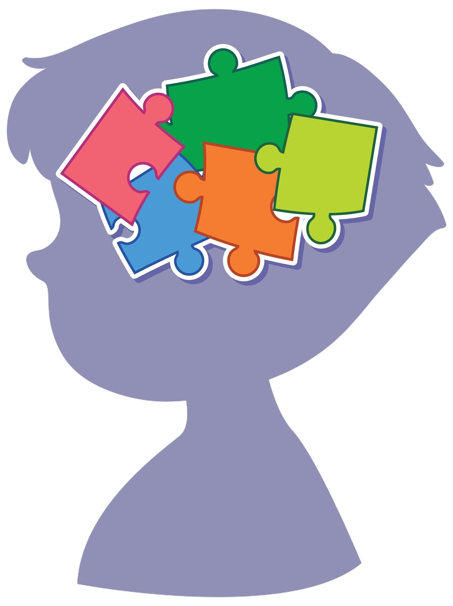
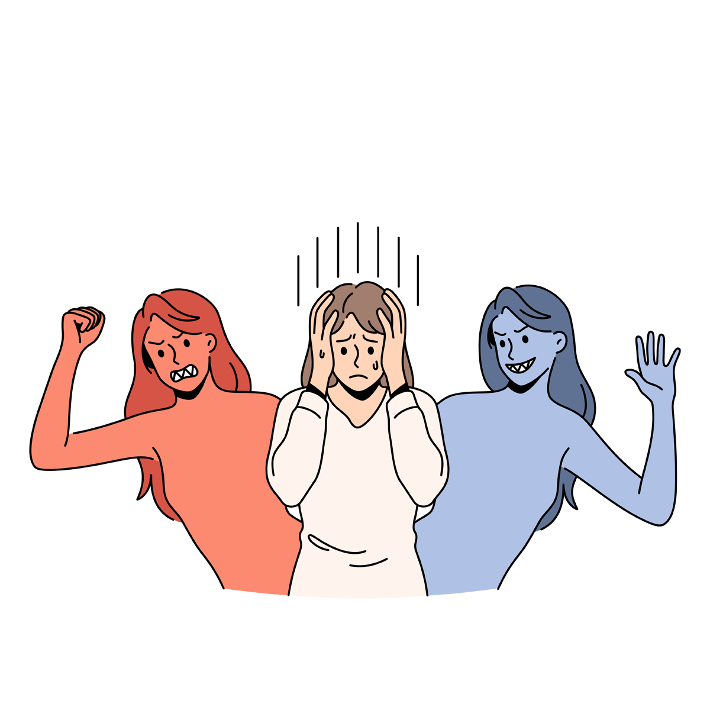
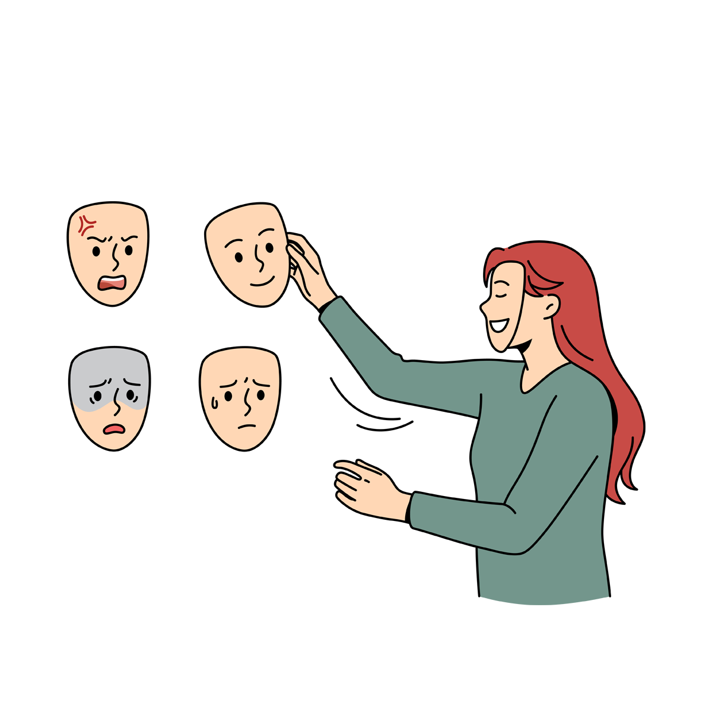

Transtorno de déficit de atenção e hiperatividade(TDAH)
É um transtorno neurobiológico de causas genéticas, caracterizado por sintomas como falta de atenção, inquietação e impulsividade. Aparece na infância e pode acompanhar o indivíduo por toda a vida.O TDAH é principalmente um problema da atenção prolongada, da concentração e da persistência (capacidade de terminar uma tarefa). As crianças afetadas podem ser também superativas e impulsivas. As crianças em idade pré-escolar com TDAH podem ter problemas com a comunicação e parecem ter problemas com as interações sociais. À medida que as crianças atingem a idade escolar, elas podem parecer desatentas. Elas podem se remexer nervosamente. Elas podem ser impacientes e falar impulsivamente. Durante as últimas etapas da infância, essas crianças mexem constantemente as pernas e as mãos de forma nervosa, falam impulsivamente, esquecem coisas com facilidade e podem ser desorganizadas. Elas geralmente não são agressivas.

As crianças são tratadas com terapia comportamental e com medicamentos estimulantes. Os medicamentos ajudam a aliviar os sintomas e facilitam a participação das crianças na escola e em outras atividades. A terapia combinada é especialmente benéfica para crianças mais novas. Já nas crianças em idade pré-escolar, a terapia comportamental pode ser suficiente.
Transtorno bipolar
O transtorno bipolar é marcado pela alternância entre episódios de depressão e de euforia. As crises pode variar em intensidade, frequência e duração. Veja como identificar.Os principais sintomas são:
Depressão: deprimido, tristeza profunda, apatia, desinteresse pelas atividades que antes davam prazer, isolamento social, alterações do sono e do apetite, redução significativa da libido, dificuldade de concentração, cansaço, sentimentos recorrentes de inutilidade, culpa excessiva, frustração e falta de sentido para a vida, esquecimentos, ideias suicidas.
Mania:estado de euforia exuberante, com valorização da autoestima e da autoconfiança, pouca necessidade de sono, agitação psicomotora, descontrole ao coordenar as ideias, desvio da atenção, compulsão para falar, aumento da libido, irritabilidade e impaciência crescentes, comportamento agressivo, mania de grandeza. Nessa fase, o paciente pode tomar atitudes que reverterão em danos a si próprio e às pessoas próximas, como demissão do emprego, gastos descontrolados de dinheiro, envolvimentos afetivos apressados, atividade sexual aumentada e, em casos mais graves, delírios e alucinações.
Hipomania:os sintomas são semelhantes aos da mania, porém bem mais leves e com menor repercussão sobre as atividades e relacionamentos do paciente, que se mostra mais eufórico, mais falante, sociável e ativo do que o habitual. Em geral, a crise é breve, dura apenas uns poucos dias. Para efeito de diagnóstico, é preciso assegurar que a reação não foi induzida pelo uso de antidepressivos.

Transtorno bipolar não tem cura,mas pode ser controlado,o tratamento inclui o uso de medicamentos,psicoterapia e mudanças no estilo de vida, tais como o fim do consumo de substâncias psicoativas (cafeína, anfetaminas, álcool e cocaína, por exemplo), o desenvolvimento de hábitos saudáveis de alimentação e sono e redução dos níveis de estresse.
Transtorno obsessivo-compulsivo(TOC)
TOC, ou transtorno obsessivo-compulsivo, é um distúrbio psiquiátrico de ansiedade descrito no “Manual de Diagnóstico e Estatística de Transtornos Mentais – DSM V” da Associação de Psiquiatria Americana. A principal característica do TOC é a presença de crises recorrentes de obsessões e compulsões.Em algumas situações, todas as pessoas podem manifestar rituais compulsivos que não caracterizam o TOC. O principal sintoma da doença é a presença de pensamentos obsessivos que levam à realização de um ritual compulsivo para aplacar a ansiedade que toma conta da pessoa.Preocupação excessiva com limpeza e higiene pessoal, dificuldade para pronunciar certas palavras, indecisão diante de situações corriqueiras por medo que uma escolha errada possa desencadear alguma desgraça, pensamentos agressivos relacionados com morte, acidentes ou doenças são exemplos de sintomas do transtorno obsessivo-compulsivo.O tratamento de TOC pode ser medicamentoso e não medicamentoso. O medicamentoso utiliza antidepressivos inibidores da recaptação de serotonina. São os únicos que funcionam.

A terapia cognitivo-comportamental é uma abordagem não medicamentosa com comprovada eficácia sobre a doença. Seu princípio básico é expor a pessoa à situação que gera ansiedade, começando pelos sintomas mais brandos. Os resultados costumam ser melhores quando se associam os dois tipos de abordagem terapêutica.


.jpg)